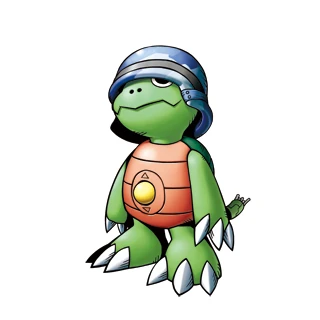

¿Qué es Fera.DV?

Fera.DV nace de la nostalgia por una época donde la tecnología tenía texturas, botones mecánicos y colores experimentales. En un mundo obsesionado con el 4K y la perfección, nosotros buscamos la belleza en los píxeles marcados, el ruido de video y la aberración cromática.
Este catálogo es un tributo a las cámaras digitales y handycams que marcaron nuestra infancia y adolescencia en los años 2000s.